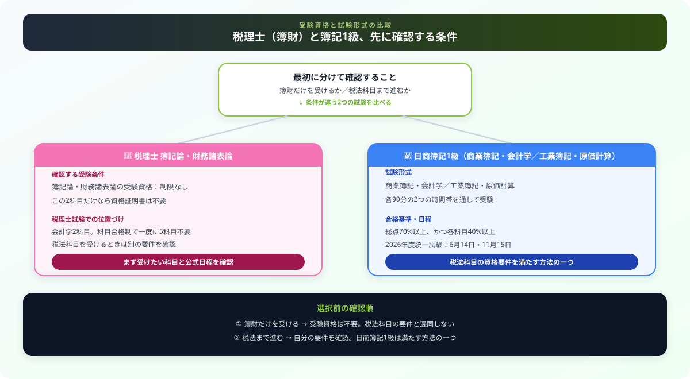

公認会計士を諦めた後：税理士（簿記論・財務諸表論）vs 日商簿記1級 どっちを選ぶべきか
こんにちは、若葉です！
会計士試験から次の資格へ進むときは、「今すぐ簿財を受けられるか」と「税法科目まで進むなら別の受験資格が要るか」を分けて考えると整理しやすくなります。税理士の簿記論・財務諸表論と日商簿記1級は、同じ「会計」の言葉で比べるだけでは判断できません。
この記事では、公式の受験資格・試験形式・2026年度日程を確認しながら、次に確認すべき条件を整理します。
この記事で整理した内容から、次の学習で確認することを1つ選び、記録に残してみてください。
最初に確認する3つの条件
この比較で先に確かめるのは、過去の学習量ではなく次の3点です。簿財だけを受験するのか、税法科目まで進むのか、日商簿記1級の試験形式を選ぶのかで、必要な準備が変わります。
| 確認すること | 公式情報から分かること | 次にすること |
|---|---|---|
| 簿記論・財務諸表論を受けたい | 会計学科目の受験資格に制限はなく、当該2科目だけなら資格証明書は不要 | 出題範囲と今年度の日程を確認する |
| 税法科目まで進みたい | 学識・資格・職歴などのいずれかの受験資格が必要 | 自分が満たす要件を国税庁の一覧で確認する |
| 日商簿記1級を受けたい | 合格は税理士試験の受験資格につながる。税法科目の要件を満たす方法の一つ | 4科目・2つの試験時間帯を通して受ける前提を確認する |
出典：国税庁「税理士試験受験資格の概要」、日本商工会議所「簿記 試験科目・注意事項」（2026年9月6日確認）

税理士「簿記論・財務諸表論」とは
税理士試験は、簿記論・財務諸表論の会計学2科目と、選択する税法3科目の合計5科目に合格する仕組みです。科目合格制のため、一度に5科目すべてを受験する必要はありません。
簿記論
2026年度は8月4日に実施されました。簿記論だけを受験する場合も、財務諸表論と合わせて受験する場合も、会計学科目には受験資格の制限がありません。
財務諸表論
2026年度は簿記論と同じ8月4日に実施されました。科目ごとの出題範囲や翌年度以降の日程は変更されうるため、申込み前に国税庁の公告・受験案内を確認します。
| 確認項目 | 簿記論 | 財務諸表論 |
|---|---|---|
| 2026年度の試験日 | 8月4日 | 8月4日 |
| 受験資格 | 制限なし | 制限なし |
| 税理士資格取得までの位置づけ | 会計学科目の1つ | 会計学科目の1つ |
| 受験の考え方 | 科目合格制。過去に学んだ範囲・演習の正答率・確保できる時間から、同時か個別かを決める | |
出典：国税庁「税理士試験の概要」、国税庁「令和8年度（第76回）税理士試験公告」（2026年9月6日確認）
日商簿記1級とは
日商簿記1級は、商業簿記・会計学と、工業簿記・原価計算を扱う統一試験です。各90分の2つの時間帯を通して受験し、合格には総点70%以上かつ各科目40%以上が必要です。
| 項目 | 2026年度に確認できる内容 |
|---|---|
| 試験科目 | 商業簿記・会計学、工業簿記・原価計算 |
| 試験時間 | 各90分（途中休憩あり）。前半のみ・後半のみの受験はできない |
| 合格基準 | 総点70%以上、かつ1科目ごと40%以上 |
| 2026年度統一試験日 | 6月14日、11月15日。2027年2月28日は2・3級のみ |
| 税理士試験との関係 | 合格は税理士試験の受験資格につながる。税法科目の資格要件を満たす方法の一つ |
出典：日本商工会議所「簿記 試験科目・注意事項」、日本商工会議所「2026年度試験日程カレンダー」（2026年9月6日確認）
2つを徹底比較
こちらが向いている人
- 簿記論・財務諸表論を直接受験したい
- 科目ごとに学習の進み具合を確認したい
- 税理士試験の会計学2科目から始めたい
- 税法科目の受験資格は別途確認できる
こちらが向いている人
- 税法科目の受験資格を満たす方法が必要
- 4科目を含む一つの統一試験に挑戦したい
- 商業簿記・会計学と工業簿記・原価計算をまとめて学びたい
- 日程と各科目40%以上の条件を前提に準備できる
| 比較項目 | 税理士 簿記論・財務諸表論 | 日商簿記1級 |
|---|---|---|
| 簿財を受けるための受験資格 | 不要 | — |
| 税法科目の受験資格との関係 | 会計学2科目の受験資格不要とは別に確認が必要 | 要件を満たす方法の一つ |
| 試験の進め方 | 科目合格制。1科目ずつ受験できる | 4科目を含む統一試験を通して受験する |
| 2026年度の主な日程 | 簿記論・財務諸表論は8月4日 | 6月14日、11月15日 |
| 選ぶ前に照合するもの | 税理士試験でどの科目まで進むか | 税法科目の資格要件、4科目の学習状況、受験日程 |
会計士受験の経験を、選択の根拠に変える
会計士試験で学んだ内容が次の試験でどこまで使えるかは、受験歴の長さだけでは決まりません。講義を見たかではなく、問題を時間内に解けたか、復習で説明できるかを科目別に確認します。
- 過去の学習記録・模試・答練から、解けた論点と止まった論点を3つずつ書く
- 税理士試験または日商簿記1級の公式出題範囲に照らし、初見になる論点を分ける
- 一度だけ時間を測った演習を行い、正答率ではなく「解き切れなかった理由」を記録する
この記録があれば、同時受験にするか、日商簿記1級の4科目を先に整えるかを、自分の状況から決められます。
結局どちらを選ぶべきか：目的別の答え
| あなたの目的 | おすすめ |
|---|---|
| 簿記論・財務諸表論を受験したい | 受験資格を待たず、国税庁の出題範囲・日程を確認して直接進める |
| 税法科目まで進みたいが、要件を満たすか不明 | 学識・資格・職歴のどれに当たるかを確認する。日商簿記1級は資格要件の一つ |
| 一度に扱う試験範囲を絞りたい | 科目合格制の簿記論・財務諸表論を、学習記録に応じて同時または個別に検討する |
| 4科目を含む統一試験に取り組みたい | 日商簿記1級の試験形式・合格基準・次回日程を確認して計画する |
| どちらか決めきれない | 次の1週間で、過去の演習結果と公式出題範囲を並べてから決める |
まとめ
- 簿記論・財務諸表論だけなら受験資格の制限はない
- 税法科目は学識・資格・職歴などの受験資格を別に確認する
- 日商簿記1級合格は、税法科目の資格要件を満たす方法の一つ
- 税理士試験は科目合格制、日商簿記1級は4科目を含む統一試験
- 同時受験か個別受験かは、過去の演習記録と公式出題範囲から決める
この記事が少しでも参考になったら……
この記事で整理した内容から、次の学習で確認することを1つ選び、記録に残してみてください。